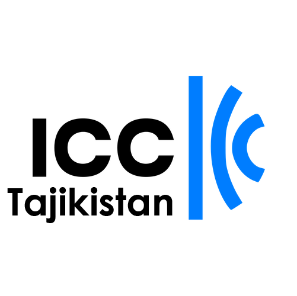

Доступ к ВКР:
где находится настоящий рост
Мы сопровождаем каждый этап выхода на рынок ВКР и операционной деятельности - стратегия, юридическая структура, местное присутствие, партнёрства и соблюдение нормативных требований - через одного партнёра, а не через десять отдельных подрядчиков.
Слепое пятно на $8,4 трлн: ВКР - самый недооценённый рынок в мире
Большинство западных стратегий видят на карте мира пустое пространство между Европой и Китаем.
Мы называем это “слепым пятном” с колоссальным потенциалом.
Великий Каспийский Регион (ВКР) - это не просто транзитный узел, а самостоятельный экономический гигант, который сейчас переосмысливает своё место в мире.
Связаться с нами ›В 2025 году Центральная Азия показала рост в 6,6% - примерно в четыре раза выше, чем большинство западноевропейских экономик. Пока конкуренты борются за долю на насыщенных рынках, ВКР предлагает структурный рост, подкреплённый ресурсами, географией и ускоряющимся внутренним спросом. Окно для занятия позиции первопроходца открыто. Но не навсегда.

Проверка реальностью:
здесь таблицы не работают
Регион ВКР приносит высокую отдачу тем, кто понимает, как он устроен. Это рынок, где сильные связи дают результаты и открывают двери там, где один лишь капитал, как правило, тонет в годах согласований. Успех здесь достигается через присутствие на месте, выстраивание доверия и умение выходить за рамки стандартных западных подходов.
Основные сложности
Регуляторная раздробленность
18 стран - это 18 разных правовых систем, налоговых режимов и культурных норм. То, что работает в одной стране, в другой может оказаться фатальной ошибкой.
Непрозрачность институтов
Официальные процедуры нередко дублируются неформальными договорённостями. Без проводника вы видите лишь фасад - реальные решения принимаются за ним.
Риск “токсичных” партнёров
В регионе полно людей, обещающих золотые горы. Ошибка в выборе партнёра здесь обходится и деньгами, и репутацией.
Наш подход
Мы работаем внутри этой среды, а не вокруг неё. Наша задача - сделать её управляемой: в полном соответствии с нормативными требованиями, без обходных путей и с чёткой линией ответственности перед вашим головным офисом.
Наша специализация:
Целевые секторы роста
Мы делаем ставку на глубину экспертизы, а не на широту охвата. Мы сосредоточены на отраслях, где сочетание региональных ресурсов и западных технологий даёт максимальный мультипликативный эффект.
Критически важные полезные ископаемые и горнодобывающая промышленность
Глобальная гонка за ресурсами превратила регион в стратегический приоритет для ЕС и США.
Возможности: лицензии на разведку, перевод запасов в стандарты ГКЗ/JORC и создание горнодобывающей и перерабатывающей инфраструктуры в соответствии с требованиями устойчивого развития.
Нефть, газ и модернизация
Отрасль переживает радикальное обновление: приоритет сместился на глубокую переработку и технологическую эффективность добычи.
Возможности: оптимизация зрелых месторождений, технологии снижения выбросов метана и высокотехнологичные нефтесервисные услуги. Управление рисками и сложностью в рамках соглашений о разделе продукции.
Энергетический переход и чистые технологии
ВКР - это не только нефть. Это будущий центр зелёного водорода и ветровой генерации.
Возможности: передача технологий декарбонизации, модернизация энергосетей, консультирование в области устойчивого развития и проекты возобновляемой энергетики.
Логистика и торговые маршруты
Торговые потоки через Евразию меняются, и регион становится ключевым связующим звеном между несколькими крупными маршрутами.
Возможности: цифровизация логистики, инфраструктурные проекты, строительство складов и транспортно-логистических узлов, управление цепочками поставок.
Технологии, финансовые технологии и цифровизация
Государства региона активно инвестируют в технологии государственного управления и цифровую экономику.
Возможности: решения для государственного сектора, финтех-платформы, кибербезопасность и экспорт облачных программных решений для быстрорастущих малых и средних предприятий.
Промышленное производство и агротехнологии
Локализация производства для снижения импортной зависимости и обеспечения продовольственной безопасности.
Возможности: поставки оборудования, агротехнологии и создание совместных предприятий в особых экономических зонах.
Доступ на высшем уровне и партнёрская сеть
Сотрудничество с лидерами отрасли и представителями государственных структур.




Команды развёртывания ВКР:
Ваш коммерческий периметр без затрат на запуск
Открытие офиса занимает месяцы, а наши команды развёртывания готовы к работе за несколько дней.
Команды развёртывания ВКР - это готовая операционная инфраструктура в регионе: работает с первого дня, действует в рамках нашего юридического лица до тех пор, пока вы не будете готовы принять управление самостоятельно.
Мы берём операционные задачи на себя, чтобы вам не пришлось
Операционная поддержка
Выставление счетов, таможенное оформление, доставка на последней миле - через наши правовые структуры, в ваших интересах.
Присутствие на месте
Проверенный представитель из нашей команды. Ваши глаза и уши на встречах, в министерствах и на объектах.
Правовая и кадровая защита
Мы выступаем официальным работодателем для вашей местной команды - расчёт заработной платы, налоги, соблюдение нормативных требований. Регистрация местного юридического лица не требуется.
Режим работы
По завершении сотрудничества вы можете полностью принять в собственность выстроенную нами операцию - или мы её аккуратно закроем без каких-либо процедур ликвидации с вашей стороны.
Как выглядит работа с нами
Каждый этап выстроен так, чтобы снизить риски прежде, чем вы вложите капитал.
Одно решение за раз - без спешки и без неопределённости.
С чего начать?
Зависит от вашей ситуации:
Есть ли здесь рынок?
Мы делаем: анализ рынка, проверку регуляторной среды, проверку благонадёжности партнёров.
Вы делаете
Предоставляете краткое описание задачи и участвуете в полудневной стратегической сессии.
Вы получаете
Отчёт с рекомендацией «входить / не входить», готовый для презентации совету директоров.
Создание правильной структуры
Мы делаем: выстраивание корпоративной структуры, налоговая архитектура, получение лицензий и выбор места размещения.
Вы делаете
Согласовываете структуру с вашими юридическим и финансовым отделами.
Вы получаете
Зарегистрированное юридическое лицо, открытые банковские счета и действующие лицензии - до того, как команда выйдет на место.
Начало работы
Мы делаем: развёртываем региональные команды, запускаем каналы продаж, начинаем первые переговоры с потенциальными партнёрами.
Вы делаете
Одобряете ключевых сотрудников и просматриваете еженедельные отчёты.
Вы получаете
Первую выручку или первые отгрузки - без необходимости самостоятельно присутствовать в регионе.
Долгосрочное владение
Мы делаем: корпоративное управление на уровне совета директоров, защита интеллектуальной собственности, аудиты соответствия требованиям и проведение сделок слияний и поглощений.
Вы делаете
Только стратегические решения - остальное мы берём на себя.
Вы получаете
Полностью управляемый актив ВКР, работающий самостоятельно под вашим контролем.
Неопределённость стоит дорого. Ясность - один звонок.